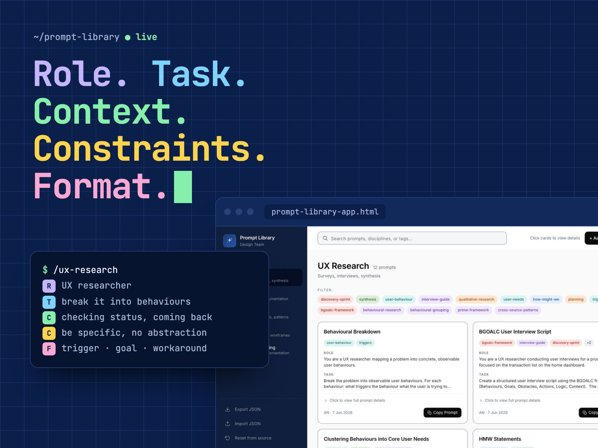
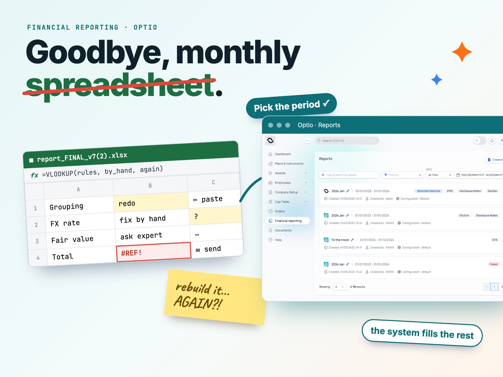

Empathy
- Building relationshipseasy to collaborate with
- Detail-orientedthorough from first draft to final check
- Hard-workingsteady effort, even when things get difficult
Aesthetic sensitivityComposure under pressureLogical reasoningCuriosity
I'm Anastasiia. I'm a product designer in Oslo with 5+ years of design behind me — most of them spent on Optio Incentives, a B2B SaaS for employee share and option programs serving 300+ corporate customers in 130+ countries. I was the first in-house product designer on the product side and owned UX end-to-end.
My degree is in information & communication systems security (National Aviation University, Kyiv). I don't write policy or pentest things — but I do think in roles, permissions and rule-based interfaces, which turns out to be exactly the territory of equity, transactions and financial reporting.
What drives me: helping people improve and grow, the users I design for and the team I design with.
Right now: I'm running an AI-augmented design process I built myself. Knowledge bases that ground the AI in real product context, RTCCF + PRISM prompts at every step, designed artifacts as outputs. You can see it in practice in a working AI co-pilot prototype that rebuilds Optio's old share simulator, the Prompt Library that lives on my Mac, my phone and inside Claude Code, Skolekartet, a school map that answers every family's question, and a six-artifact research methodology from problem framing to research report. Before Optio: e-commerce UX and accessibility-first work for a school for children with special needs in Kyiv.
Hi, Anastasiia here. I thought it would be easier to say hi in a video than in a post. So here I am.
What I like best about being a designer isn’t the polish or the big picture — it’s the moment when everything falls into place. The button is right, the text is right, and you know it works.
I work pretty fast at the start of a project, and slow down toward the end. I use AI tools and prompts in my work every day. Not because they’re trendy, but because they give me more time for the parts I like best — sitting with the problem and finding the right way.
I’ve lived in Oslo for four years, originally from Ukraine, and there’s a lot I’m proud of along the way.
I gave every prompt the same five-part shape and built a library that lives on my Mac, my phone and inside Claude Code. The prompts are templates, so anyone can swap in their own project and reuse them. AI helps where it actually helps, without replacing the judgment call.

The financial reporting redesign replaced Customer Success's manual Excel exports with guided self-serve flows — across IFRS, audit, period-close and ad hoc reports — cutting prep time from days to hours.

The AI-fluency line on the CV isn't a claim — it's working things you can open in a new tab.
Rebuilds Optio's old simulator around one question: what would I take home? Designed phone first, then landscape, then laptop. An AI co-pilot explains the maths for your own shares, compares choices and never recommends.
Open the prototypeOne web page and one file of prompts, from research to handoff. Every prompt has the same five parts, and the project details sit in [square brackets] so you can swap in your own. Works on the phone, offline and inside Claude Code.
See the toolEach family says what matters to them: results, wellbeing, access or distance. Every number comes in plain words, and the shortlist opens on a parent’s own phone. Going in front of parents next.
Read the caseOslo, hybrid, or remote within the EU. Ideally fintech, compliance-heavy SaaS, or anywhere a rule-based interface needs to feel kind.